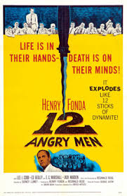
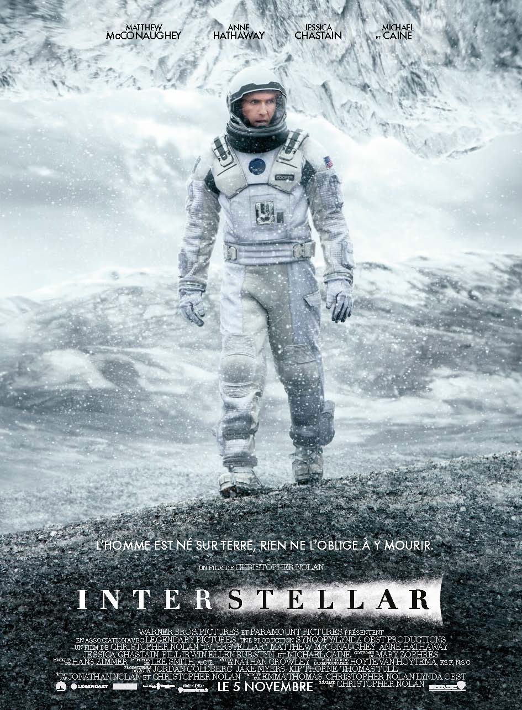

I think fundamentally the future is vastly more exciting and interesting if we're a spacefaring civilization and a multiplanet species than if we're or not. You want to be inspired by things. You want to wake up in the morning and think the future is going to be great. And that's what being a spacefaring civilization is all about.” (Sep, 2017, Elon Musk)
| My Favorite Movies | |
|---|---|
|  |
12 Angry Man12 Angry Men is a 1957 American courtroom drama film adapted from a teleplay of the same name by Reginald Rose.[6][7] Written and co-produced by Rose himself and directed by Sidney Lumet, this trial film tells the story of a jury made up of 12 men as they deliberate the conviction or acquittal of a defendant on the basis of reasonable doubt, forcing the jurors to question their morals and values. In the United States, a verdict in most criminal trials by jury must be unanimous. The film is notable for its almost exclusive use of one set: out of 96 minutes of run time, only three minutes take place outside of the jury room. |
Seul sur MarsSeul sur Mars (titre original : The Martian) est le premier roman publié de l'auteur américain Andy Weir. Disponible sous forme de livre électronique dès 2011, il paraît pour la première fois sous format papier en 2014 puis il est traduit en français et publié par les éditions Bragelonne la même année. Seul sur Mars est un roman de science-fiction visant à un grand réalisme (hard science-fiction). Il a été adapté au cinéma par Ridley Scott en 2015. |
|
|  |
InterstellarDans un futur proche, la Terre est de moins en moins accueillante pour l'humanité qui connaît une grave crise alimentaire. Le film raconte les aventures d'un groupe d'explorateurs qui utilise une faille récemment découverte dans l'espace-temps afin de repousser les limites humaines et partir à la conquête des distances astronomiques dans un voyage interstellaire. |